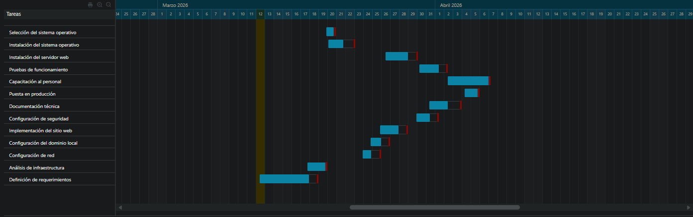
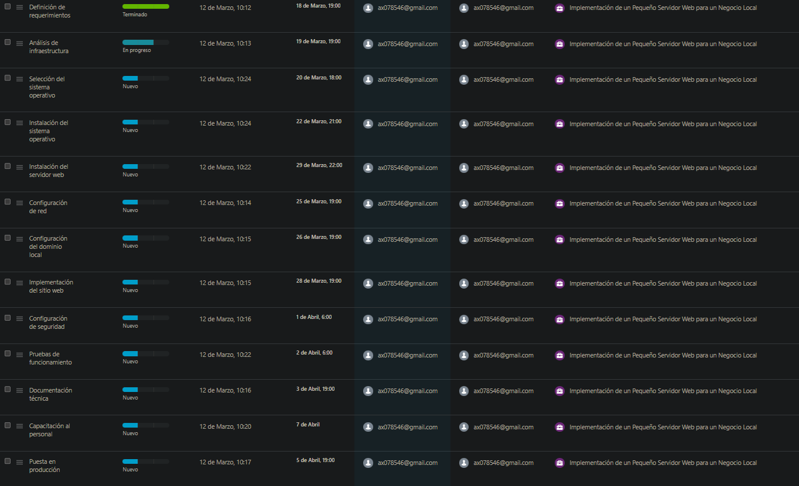

Análisis técnico completo para alojar una página web corporativa con software de código abierto — Apache / Nginx sobre Ubuntu Server.
La empresa actualmente depende de hosting externo, generando costos recurrentes y falta de control técnico sobre su infraestructura web.
Un servidor web escucha solicitudes HTTP/HTTPS y responde enviando los recursos solicitados al navegador del cliente. El ciclo completo ocurre en milisegundos.
El navegador traduce el nombre de dominio (ej. www.empresa.com) a una dirección IP mediante el sistema de nombres de dominio (DNS), consultando los servidores DNS configurados en el sistema operativo del cliente.
Se establece una conexión TCP mediante el proceso de three-way handshake entre el cliente y el servidor. El puerto destino es 80 para HTTP o 443 para HTTPS cifrado con TLS.
El cliente envía una solicitud GET o POST al servidor indicando el recurso deseado, la versión del protocolo, cabeceras con metadatos (User-Agent, Accept, cookies) y opcionalmente un cuerpo de mensaje.
El servidor web localiza el recurso solicitado en el sistema de archivos o lo genera dinámicamente (PHP, Python, etc.). Aplica reglas de reescritura, verifica permisos y decide qué módulo procesará la solicitud.
El servidor responde con un código de estado (200 OK, 301 Redirect, 404 Not Found, 500 Error) y las cabeceras de respuesta, seguido del contenido del recurso solicitado.
El navegador interpreta el HTML recibido, realiza solicitudes adicionales para CSS, JavaScript e imágenes, y construye el DOM para mostrar la página web al usuario final.
Dos servidores web de código abierto líderes en el mercado. Cada uno con arquitectura, filosofía y casos de uso diferenciados.
Ideal para este proyecto por su facilidad de configuración con .htaccess, compatibilidad con PHP/MySQL y documentación extensa que facilita la administración interna.
Válido si se prioriza eficiencia de memoria y rendimiento bajo alta concurrencia. Arquitectura event-driven, diseñado para escalar a miles de conexiones simultáneas.
| Criterio | Apache | Nginx |
|---|---|---|
| Arquitectura base | Basada en procesos/hilos | Basada en eventos (asincrónica) |
| Rendimiento archivos estáticos | Moderado | Excelente |
| Alto tráfico concurrente | Consume más RAM | Alta eficiencia de memoria |
| Soporte .htaccess | ✓ Sí, nativo | ✗ No (config. centralizada) |
| Facilidad de configuración | Alta (muy documentado) | Moderada-alta |
| Módulos dinámicos | Sí, gran variedad | Sí, pero menos que Apache |
| Proxy inverso | Sí (mod_proxy) | Excelente, nativo |
| Caso ideal | Apps dinámicas, .htaccess | Sitios estáticos, alto tráfico |
| Consumo RAM (baja carga) | ~50-100 MB | ~10-30 MB |
| Licencia | Apache License 2.0 | BSD 2-Clause |
Especificaciones técnicas mínimas y recomendadas para implementar el servidor web en el entorno de la empresa.
| Componente | Software | Función |
|---|---|---|
| Sistema Operativo | Ubuntu Server 22.04 LTS | Base del sistema, estable con soporte hasta 2032 |
| Servidor Web | Apache 2.4 / Nginx 1.24+ | Procesa y sirve solicitudes HTTP/HTTPS |
| Lenguaje de scripting | PHP 8.x | Procesamiento dinámico de contenido web |
| Base de Datos | MySQL / MariaDB | Almacenamiento de datos del sitio web |
| Firewall | UFW | Control de puertos y tráfico de red |
| Certificado SSL | Let's Encrypt / Certbot | Cifrado HTTPS para comunicaciones seguras |
| Acceso remoto | OpenSSH | Administración remota segura del servidor |
13 fases distribuidas en 19 días hábiles, desde el levantamiento de requerimientos hasta la puesta en producción del servidor.
Diagrama de gannt de la implementación del servidor web

imagen de las tareas a disposición

Despliega cada fase para ver la descripción técnica detallada de los procedimientos, herramientas y configuraciones aplicadas.
Matriz de riesgos identificados y prácticas de seguridad recomendadas para mantener el servidor protegido y disponible.
La seguridad es un proceso continuo. Haz clic en cada categoría para ver las prácticas recomendadas.
La implementación del servidor web interno es una solución técnicamente sólida y económicamente ventajosa que responde directamente a las necesidades del negocio.